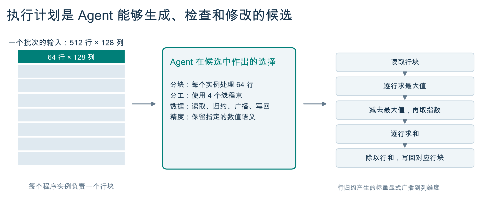
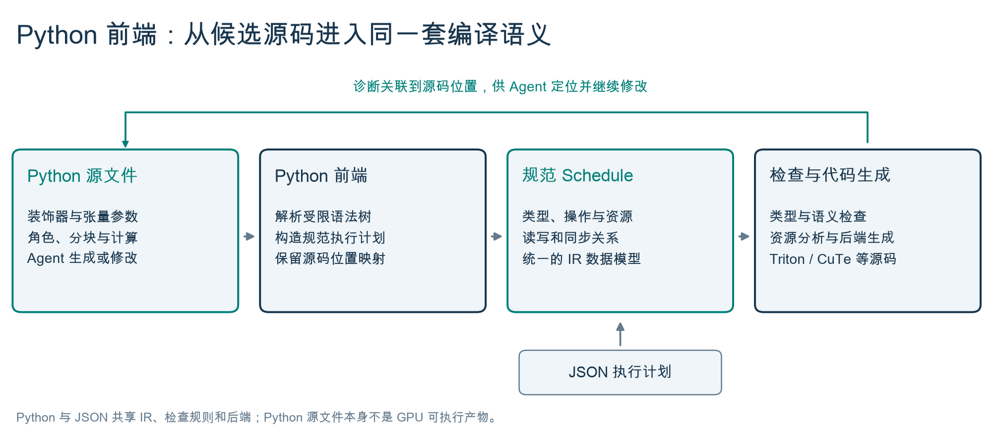
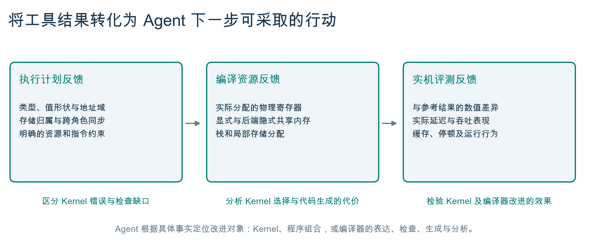
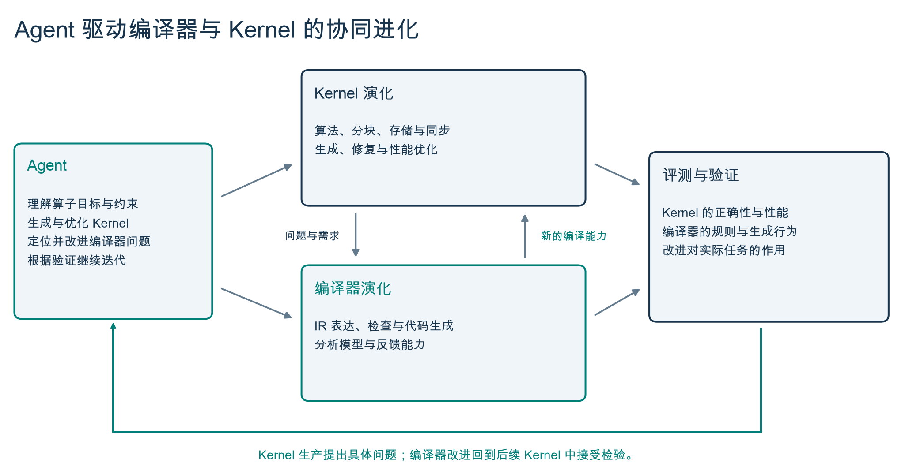

把“更快”拆成三个能各自找到记录的结论
open-cake-ir 独立重建了 CAKE 论文（Compiler-Agent Co-Design for Frontier Kernel Evolution，arXiv:2608.12629v1）中的部分思路，不是论文未公开实现的复制品，与论文作者也无官方实现或背书关系。
比如把一张表的每行求和，数学很简单，GPU 上却有多种做法：一组线程处理一行，还是分成几块？数据读一次后能否复用？两组线程会不会同时改一个答案？只说“更快”没有给出这些选择；直接看最终机器代码，又很难发现改动的原因。项目在两者中间放一份执行计划，把数据、分工、顺序和资源写出来。编译器据此检查并生成代码；真实机器上的测量决定它到底对不对、快不快。
它的研究价值在于能复查的过程：哪项选择变了，为什么被接受或拒绝，哪个结果支持改进。项目规模、AI 忙了多久、写了多少代码，都不是性能证据。
这三个结论分属不同层，每一个都应能找到对应记录；见仓库文档 docs/wiki/results.md。
Kernel 演化与编译器演化，由同一个 Agent 推动
Kernel 生产暴露对编译器的新要求；编译器改进再回到 Kernel 生成和优化中。两类改动分别验证：一次受控的 Kernel 比较使用固定编译器，新编译能力在验证后才用于后续任务。
四个部分各做一件事
| 部分 | 用普通话说 | 输入与输出 |
|---|---|---|
| Compiler 编译器 | 读懂并检查执行计划，再翻译成源码。能独立工作，不反过来依赖 AI、实验或报告。 | Schedule → Assessment → Lowering |
| Research Lab 实验系统 | 按约定安排 AI 修改候选、分配预算、决定何时停止。 | Workload + Study → 一次实验 |
| Evaluation 评测 | 先核对答案，再按相同规则计时和分析瓶颈。 | 固定候选 → 检查与测量记录 |
| Evidence 证据存储 | 保存事实，让别人从记录重建结论；追加写入。 | 原始产物 → 审计 → 报告 |
依赖方向是单向的：Lab 引用一个不可变的 Compiler 版本；Lab 控制执行，Evaluation 施加共同的检验，Evidence 保存观察。Compiler 不 import Lab、provider、workload、campaign、evidence 或 claim 代码——这是仓库第一条设计决策（ADR 0001），至今未变。
三份说明也不能混为一份：Workload 约定要算什么、怎样判对、容许多少误差；Schedule 写哪组线程处理哪一行、数据放哪、先做什么；Study 约定比较哪些编写环境、每组运行几次、预算多少、怎样解释结果。数学任务可以不变而执行计划改变；实验约定必须预先固定。preflight 把 Workload、Study、Compiler 版本、作者环境字节、预算和执行目标一次性解析成一份不可变的 CampaignLock，Campaign 在它之上运行、从不改写它。
Evidence 长什么样。每次 Run 是一条内容寻址、只追加、带 hash 链的事件账本：run_started → provider_turn_completed → candidate_set_filtered / candidate_rejected → launchable_candidate_sealed → evaluation_attempt_started / completed → candidate_evaluated → diagnosis_routed → candidate_selected → checkpoints_projected → run_terminal，共 13 种封闭事件。检出里保留的 7 个历史 B200 Campaign 是冻结的验收夹具；新的 Campaign 证据一律写在检出之外。审计返回两个正交事实：archive_integrity 与 filesystem_custody_verified——一份完整但权限宽松的 git 检出可以重放，却支持不了任何晋升或估计。
Agent 修改的是选择，编译器检查的是一致性
一份 Schedule 把计算、数据依赖、存储位置、线程角色与同步关系写成明确结构。Agent 能构造它，工具能检查它，反馈能指回它的具体位置。能交给编译器推导的地址计算和阶段展开，则由工具处理。
一份完整的 Softmax 执行计划
按行的稳定 Softmax：m = maxj xj，wj = exp(xj − m)，yj = wj / Σw。数学固定后，Agent 还要选择怎样在 GPU 上完成它——下面每个程序实例处理一个批次中的 64 行、每行 128 个元素，用四个线程束完成。这是仓库 examples/python/softmax.py 的原文，也是技术报告 §3.1 的示例。
from open_cake_ir.compiler import frontend as cake
@cake.schedule(name="softmax-b8-smoke", target="sm_100a", backend="triton",
entry_point="cake_softmax_b8_smoke",
residency={"ctas_per_multiprocessor": 4, "registers_per_thread": 96})
def softmax(lm, x: cake.Tensor((8, 512, 128), "fp32"),
y: cake.Tensor((8, 512, 128), "fp32", mode="output")):
compute = lm.role(warps=[0, 1, 2, 3])
row_block = lm.program(x, axis=0, dimension=1, tile=64)
batch = lm.program(x, axis=1, dimension=0, tile=1)
with compute:
x_tile = lm.load(x[batch, row_block, :], reuse="reused", id="load_x")
rowmax = lm.reduce(x_tile, op="max", axis=1, scope="cta", id="row_max")
shifted = lm.sub(x_tile, lm.broadcast(rowmax, axis=0), id="shift")
weights = lm.exp(shifted, id="exponentiate")
rowsum = lm.reduce(weights, op="sum", axis=1, scope="cta", id="row_sum")
y_tile = lm.div(weights, lm.broadcast(rowsum, axis=0), id="normalize")
lm.store(y[batch, row_block, :], y_tile, id="store_y")@cake.schedule 声明目标、代码生成路线和入口；cake.Tensor 声明参数形状、类型及输入输出角色；lm.program 指定实例如何切分工作，lm.role 与 with compute 指定操作所属的线程角色。读取、归约、广播和写回形成可检查的数据依赖。调整 tile=64 就是在改变每个实例处理的行数；改角色的线程束集合就是在改工作分配——改完仍由编译器检查合法性、由实机评测判断收益。示例中的 residency 字段是调度约束或请求，不是已测得的驻留数和寄存器分配。
同一前端也接受算术表达式 a * b + c 和显式的 lm.fma(a, b, c)——二者保留不同的舍入语义。多角色与流水线通过 lm.smem、lm.tmem、lm.pipeline、lm.barrier 和 lm.range 声明存储、交接与符号循环（见 examples/python/kmeans_pipeline.py）。

Python 怎样进入检查与代码生成
前端从受限的 Python 语法树构造规范 Schedule；JSON 输入进入同一语义模型；源码位置作为伴随信息保留，供诊断指回给 Agent。接收候选的 AST 入口不执行任意宿主 Python 代码。以下是报告给出的实际连接方式：
from open_cake_ir.compiler import Compiler
from open_cake_ir.compiler.frontend import read_schedule
compiler = Compiler.load(".", "compiler/revision.json") # 报告快照里叫 revision.lock.json
authored = read_schedule("examples/python/softmax.py")
assessment = compiler.assess(authored.document)
for finding in assessment.findings:
print(finding.code, authored.location_for(finding.path), finding.message)
if assessment.lowering_eligible:
generated = compiler.lower(assessment)
print(generated.source) # 目标源码；编译为 GPU 产物与数值/性能验证沿用后续工具链不需要 GPU 的三步
安装后得到 open-cake-ir 命令行入口，三个子命令都不接触 GPU：compiler assess（结构检查）、compiler lower（生成源码）、compiler check-corpus（跑整套语料）。下面是在本检出上对 16 行的 examples/python/fma.py 实际跑出的文本：
$ open-cake-ir compiler assess --format text --revision compiler/revision.json examples/python/fma.py
执行计划：fma-b8-smoke
编译器：open-cake-ir@c75ee4b3d7f15bd26c94a26ba23f77993084c4c8
目标：sm_100a
结构检查：通过
生成代码：允许
生成方式：triton
诊断：1 条
- [提示] RESIDENCY_BOUND | examples/python/fma.py:9:15 | roles | hardware_conformance | report
这一步未运行 GPU；诊断原文和完整分析可用默认 JSON 输出查看。
$ open-cake-ir compiler assess ... corpus/schedules/fma-b8-smoke-arity-drift.json # 一个反例
执行计划：fma-b8-smoke-arity-drift
结构检查：未通过
生成代码：不允许
诊断：2 条
- [阻止接受] ELEMENTWISE_ARITY | operations[3].reads | data_consistency | blocking
- [提示] RESIDENCY_BOUND | roles | hardware_conformance | report
$ open-cake-ir compiler check-corpus --format text --revision compiler/revision.json
语料检查：151/151 项符合预期 # 109 项预期接受 + 42 项预期拒绝；这不是 GPU 正确性检查生成的 Triton 源码里，FMA 落成一条 tl.inline_asm_elementwise("fma.rn.f32 $0, $1, $2, $3;", …)——因为 Schedule 显式命名了指令合同 ptx.fma.rn.f32，单次舍入的语义没有交给后端猜。仓库反复要求：不要把“源码已生成”写成“GPU 测试已通过”。
同一份计划走到 B200 为止
仓库里只有一条链让同一份 Schedule 从教程一直走到真实设备记录，就是上面这份 fma-b8-smoke。把它按“三个结论”摆开：
- 任务y = a × b + c，FP32，8 行 × 128 列三份输入不被修改；融合乘加只舍入一次（
docs/GETTING_STARTED.md§2）。 - 计划
corpus/schedules/fma-b8-smoke.jsontargetsm_100a；一个角色compute占 warps [0,1,2,3]；四个 global buffer 与四个 register tile；5 个操作 load_a / load_b / load_c → fma（instruction.contract = ptx.fma.rn.f32）→ store_y；program_map 以 a 的第 0 维为 batch 轴、tile 1，即每个程序处理一行；loweringtriton，入口cake_fma_b8_smoke。Python 写法就是上面 16 行。 - 检查结论一：计划通过检查 有记录在
c75ee4b3上 assess：接受、允许生成，1 条 report 级RESIDENCY_BOUND——它同时声明“this Schedule declares no shared_memory or tensor_memory … a backend may still allocate some”，即分析说出了自己检查的域。反例fma-b8-smoke-arity-drift.json被ELEMENTWISE_ARITY在operations[3].reads以 data_consistency 类别阻塞。 - 生成96 行 Triton，grid (8,1,1)，num_warps 4，maxnreg 64CLI 结尾明说：已写出源码；尚未编译成 GPU 二进制，也未运行 GPU。
- 设备结论二：GPU 答案正确 有记录2026-09-04，Compiler v41（源提交
ee32b768），examples/gpu/fma_b200_correctness/prepare.py直接读取这份 JSON 经 assess、lowering 后封装成任务，在 NVIDIA B200 上完成 correctness、memcheck、racecheck 三阶段：六个确定性输入族，整数精确 oracle 单次 RN-even 舍入，独立复算 36,864 个输出元素通过（30,333 位精确 + 6,531 quiet-NaN 类别）。记录在docs/data/fma-v41-b200-correctness-20260904/。 - 计时结论三：速度提高 没有记录
performance_measured: false。这条链在这里停住——三个结论里它只满足两个，而这正是仓库要求分开记录它们的原因。带计时的第三段要换到另一条链（M1 Pro 的 gemm_silu，见 §05），而那条链的候选 Schedule 与收据在检出之外。

编译器里有什么
src/open_cake_ir/compiler/ 是 43 个文件、18,783 行 Python，零运行时依赖：ir/（数据模型与词汇）、verifier/（四类规则）、backends/（四条路线）、performance/（工作量、驻留、剖析、编译资源、排序与利用率分析）。
13 种操作，一种规范写法
load · store · elementwise（square、rsqrt、exp、exp2、reciprocal、relu、tanh、add、sub、mul、div、fma 共 12 个）· cast · mma（秩二收缩，显式指令合同）· epilogue · reduce（sum/max）· reduce_argmin · top_k · scan · index_expand · online_softmax · atomic_rmw。归约是“一种 kind 带一个算子”，而不是每个算子一种 kind。
四个后端，一个静态清单
triton（Python/Triton；NVIDIA，以及 AMD 与海光经 Triton 的 AMDGCN 分支产出 hsaco）· cutlass_cute_dsl（Blackwell tcgen05 / TMEM / TMA / mbarrier）· native_cuda（CUDA C++ / PTX，nvcc）· metal（MSL，FP32，load / elementwise / reduce / store）。每个后端实现 requirements、preflight、emit；Schedule 自己声明路线与入口，没有按算子查表的 profile，也没有独立的 HIP 后端。
只在四类里阻塞
schedule_semantics（24 个诊断码，如 LOOP_NEST_CYCLE、ROLE_WARP_OVERLAP）· hardware_conformance（约 48 个，如 TARGET_OPERATION_UNSUPPORTED、TARGET_REGISTER_CAP_UNMODELED）· data_consistency（165 个，如 LOAD_ACCESS_SHAPE_MISMATCH）· program_safety（23 个，如 OP_CROSS_ROLE_RACE、STATE_STORE_PROGRAM_OWNER）。三档严重度 blocking / report / hint；后端专属限制由后端报告，不把可表达的计划误判为结构错误。
硬件事实只声明一次
compiler/targets/*.json 声明 warp/wave 宽度、存储空间、操作与指令合同、同步合同、代码对象（cubin / metal_binary_archive / hsaco）。未声明的事实报告为“未建模”，不替换、不继承别的目标的常数。
151 项语料，逐项对照预期
109 项预期接受、42 项预期被指定规则拒绝。改编译器必须过完整 Gate，并在合并到 main 时由作者之外的会话评审一次；期望值从不为了让 Gate 通过而重生成。Gate 报告它没检查的目标（当前 apple_gpu_family7、family9），不为凑数造案例。
用反馈判断该改 Kernel 还是改编译器
Agent 需要的不只是“失败”或一个延迟值。有效的反馈说明失败发生在什么阶段、涉及哪一处候选、哪些事实已经得到确认。项目把计划分析、编译资源与实机结果关联到同一候选，让 Agent 能区分实现错误、能力缺口和分析失准。
修正实现关系
类型、地址域、读写效果、角色同步与目标指令约束被检查。诊断带类别和位置，并区分“计划不成立”与“后端暂不支持”。Agent 可以只改某次读取、广播或同步关系，而不是重写整个程序。
分析候选代价
后端会引入临时变量与隐式存储，逻辑缓冲区数量不等于物理分配。系统从编译产物与启动配置中读取寄存器、共享内存、栈与局部存储；采集需要对应工具链但无需执行内核，已有报告可在无 CUDA 的机器上复用。
判断修复与优化是否有效
外部参考检查输出及状态变化，计时比较候选表现，性能剖析定位瓶颈。是否达标由评测结果确认，不能以 Agent 自述替代。
三层各有范围：资源分配可以收紧驻留上界，却不能换算成运行时间；性能估算只有在对应目标和适用域存在校准依据时才能用于排序（本检出没有已发布的校准，所以成本模型不参与排序）。把未知保留下来，也帮助 Agent 避免把未经验证的假设当成优化事实。

Agent 先定位问题所在：已有原语能组合出计算时，继续改实现；需要多内核协作时，表达中间缓冲区与程序依赖；反复出现且确实无法表达的需求，才有理由扩展 IR。若合法计划被错误拒绝、非法计划被放行，或代码生成没有保留语义，则改对应的检查与生成机制。编译器改进由 Agent 准备，经独立审查与回归验证后才用于后续 Kernel；新原语必须同时具备类型、效果、合法性、分析和生成规则。
编译器要求精确目标匹配，从不把计划降级到另一架构
三个架构家族是平等的对手：NVIDIA、Apple GPU、AMD（海光 DCU 作为独立 vendor 与 AMD 共享 amdgcn-amd-amdhsa-- 代码对象）。每台主机按精确目标采集一次为 runtime/hosts/<target>.json；没有采集的目标报告为“没有”，不用别的主机顶替。
| 精确目标 | 设备与主机采集 | 宽度 / 代码对象 | 编写路线 | 语料 |
|---|---|---|---|---|
| sm_100a | NVIDIA B200（CC 10.0，148 SM）。历史证据所在；本检出无 host 采集 | warp 32 · cubin | Triton · CuTeDSL · 原生 CUDA | 102 |
| sm_103a | NVIDIA B300（CC 10.3）。主机：Python 3.12.13、CUPTI 13.0.1、Nsight Compute 2025.4.1、torch 2.11.0、Triton 3.6.0 | warp 32 · cubin | Triton · CuTeDSL（GEMM）· 原生 CUDA | 29 |
| apple_gpu_family7 | Apple M1 Pro（macOS 26.0，Swift 6.0.3） | 32 lane · metal_binary_archive | Metal simd_program_tile | 0 未检查 |
| apple_gpu_family8 | Apple M2（macOS 15.7.3，Swift 6.1.2） | 32 lane · metal_binary_archive | Metal simd_program_tile | 15 |
| apple_gpu_family9 | Apple M4（macOS 26.6.2，Swift 6.4） | 32 lane · metal_binary_archive | Metal simd_program_tile | 0 未检查 |
| gfx938 | 海光 DCU BW1101（vendor hygon，64 CU，64 KiB LDS）。主机：DTK，dcc 25.10，Triton 3.6.0+dtk，Python 3.10.12 | wave 64 · hsaco | Triton 路线（AMDGCN）→ HSACO，evaluation/hip_driver.py 装载 | 3 |
| gfx1151 | AMD Radeon Graphics（RDNA 3.5）。主机：ROCm 7.2.1，HIP 7.2，Triton 3.5.1 | wave 32 · hsaco | Triton 路线（AMDGCN） | 1 |
“语料”列是当前 Corpus Gate 检查到的每目标案例数（合计 151/151 符合预期）；apple_gpu_family10 另有 1 例只用于拒绝检查。语料数量说明检查覆盖，不说明性能。Gate 也不触及 gfx938 声明的 mma / dot 合同和 gfx1151 声明的 cast（F-2026-09-17-004 / -009 已记录）。
每个目标自己的计时器
| 目标 | 计时来源 | 测得区间 | 每个样本前的复位与采样 | 状态 |
|---|---|---|---|---|
| sm_100a · sm_103a | CUPTI（bench_gpu_time_with_cupti） | kernel 的 GPU 时间 | 刷新 L2（cold L2）；11 次 dry run，每个 cohort 25 个样本，配对采样 | 延迟 |
| apple_gpu_family7/8/9 | Metal MTLCommandBuffer.GPUStartTime / GPUEndTime | 整个已完成的 command buffer（v2 协议按 64 次 dispatch 均摊） | warm，无显式 flush；3 次预热 + 25 个样本；10 组候选/基线交替配对，材料性比 1.05，需 6 组胜出，相对 IQR 门 0.05 | 延迟 不是纯 kernel 延迟，不继承 CUPTI / L2 flush 语义，也不排除其他 GPU 客户端 |
| gfx938 · gfx1151 | hip_dispatch（torch.profiler / roctracer 的按 dispatch 设备时间；2026-09-17 命名） | 一次 dispatch 的 begin → end | 清零一块 256 MiB 缓冲；25 个样本 | 无合格延迟 gfx938：十个 cohort 在声明的 CV 上界 0.05 下 measurement_quality_passed: false（冷 CV 0.044–0.063，计时量子 0.160 µs），上界不放宽；gfx1151：两个设备侧计时器相差 31%（31.858 vs 24.224 µs），绝对延迟不被支持为结论，也没有 Executor |
output_mismatches: 0，max_abs_error: 4.77e-07。这条路径与 NVIDIA、Apple 并列，不是从它们任何一条降级而来。那份收据里 timing: null。次日（09-17）设备注册表为它命名了 hip_dispatch 计时来源，但测出的 cohort 没有一个过质量门——所以截至 2026-09-18，gfx938 有命名的计时源、没有合格的延迟结论，优化 campaign 仍被阻塞。计时来源要靠测出来，不是加一行表。通过稳定性门的已保留测量
这些数字转录自 findings/ 里引用的确认事件，每一条都是一个目标、一个形状、一次配对确认，带着它自己的 Compiler / Executor 版本；原始收据在各主机的证据根，不在 git 树内。Executor 的历史命名前缀 b200-vN 只是软件版本号，不指硬件。它们不构成 portfolio，也不构成框架级结论。
| 目标 · 任务 | 候选 ms | 基线 ms | 配对加速 | 门 | 来源与边界 |
|---|---|---|---|---|---|
M1 Pro · gemm_silu FP32 128×256×32 | 0.079588 | 1.878596 | 23.60× | 10/10 胜，质量通过，max abs err 4.196e-05 | F-2026-09-11-004（Executor v98 / Compiler v73；形状见 docs/PERFORMANCE_SCORING.md）。输出列特化机制：每个程序只载入一列 B[:,col]、归约到一个标量，已落为 Compiler pass specialize_output_columns（v79）。“exact to one M1 Pro shape”；后继 v115/v80 上的合格终点是一个八段 K-split 行形式，0.1366 ms = 14.19×，基线在 v73→v80 间持平。该 Finding 尚未关闭：verified_by 为空，M4 leg 仍欠 |
M4 · channel_absmax_scale | 0.000712 | 0.000788 | 1.107× | 9 胜 1 负，质量通过 | F-2026-09-12-001（Executor v104 / Compiler v74）。精确 R=2 的行归约标量化；该 campaign 同时做了除以 448 的强度削减，没有单独隔离机制贡献 |
M4 · bias_gradient_reduction | 0.000678 | 0.000772 | 1.138× | 质量通过，max abs err 2.384e-07 | 同一 Finding 的后继 M4 campaign（Executor v113 / Compiler v78）；产物被晋升为该 M4 任务格的第零代 incumbent |
B300 · rmsnorm_input_gradient FP32 128×1024 | 0.002497 | 0.003104 | 1.243× | 10/10 胜 | F-2026-09-15-005（Compiler v85 / Executor v126；CUPTI 冷 L2 配对，CV 上界 0.15；v85 的 lock 位于 compiler/releases/v84+…/ 目录内）。调用方显式选择 CTA 宽度的候选改写（rmsnorm 梯度与 cosine 选 8 warps，swiglu 与 softmax 反向选 16）。“No universal optimal-width rule follows”；宽度 1 的地板与旧基线持平，各比值只对各自确认的基线成立，且只在 FP32 128×1024、sm_103a 上 |
B300 · swiglu | 0.002208 | 0.003648 | 1.652× | 10/10 胜 | |
B300 · softmax_backward | 0.002560 | 0.002928 | 1.144× | 10/10 胜 | |
B300 · cosine_similarity | 0.002528 | 0.002976 | 1.177× | 10/10 胜 |
measurement_quality_failed（设备争用）；M1 Pro 后继 leg 上 33.9× 的搜索读数被每 cohort 的相对 IQR 门拒绝——同一颗 SoC 上另一个会话在跑 pytest。B200 上保留的三份记录（FMA v41、affine v43、state-store v40）全部是固定实例正确性，没有计时。任务面。Lab 有一套 24 个可移植 Workload 的任务集（activation 8 · rowwise 5 · reductions 4 · optimizers 3 · contraction 4；默认冻结形状 128×1024，contraction 为 1024×128×64），加上 contracts/workloads/ 下 29 份冻结合同（Tile 三算子、Flash-KMeans、TinyGEMM2、DSA、QSA、KDA、AKA、DeepSeek-V4、SoL-ExecBench RMSNorm）。启动器 tools/launch_task.py 当前暴露 35 个任务（4 个归一化任务 + 24 任务集 + 6 个 SoL-ExecBench 导入 + gemm_bias）。列出的是合同，不是“已接通 Lab、通过 GPU 或达到最佳性能”的排行榜。
Apple 上的内置任务。rmsnorm、layernorm（带仿射参数）与 residual_rmsnorm，通过 TaskLab / Ralph 在固定预算下生成候选并调用公共评测；每个 Workload 只覆盖一个形状，含 primary、零值、近零值、交替符号与混合幅度五类必测输入，全部通过后才测量 primary。
报告说了什么，以及它自己划定的边界
《open-cake-ir：Agent 驱动的编译器与 Kernel 协同进化》随 research-preview-2026-09-06 发布，压缩包 1.06 MB。报告版本 2026-W36.1，绑定源码快照 0d954c5（Compiler 与 Executor 均为 v46）。这次叙事重写没有新增实机编译、正确性或性能测量。
- 正文
TECHNICAL_REPORT.zh-CN.md— 摘要 + 7 节- 附录
TECHNICAL_APPENDIX.zh-CN.md— 实现来源（快照内 15 个文件的对照表）、QSA 案例、Flash-KMeans 案例、其他正确性来源、图表复现- 示例
examples/python/softmax.py、fma.py、kmeans_pipeline.py（与仓库示例一致）- 图与数据
- 5 组主图（PNG + SVG）、
data/report-data.json（派生投影，无发布或晋级权限）、qsa-r23-confirmation-samples.json（两臂各 125 个原始样本）、绘图脚本
章节地图
- §1在算子生产中共同改进 Kernel 与编译器生产一个算子是一连串相互依赖的工作；Agent 承担这条链，并在过程中改进它所用的编译能力。
- §2Agent 怎样组织持续的生产与改进任务输入固定语义、形状、参考、容差、预算与停止条件；候选提交自动接编译与评测；同一会话多回合继续，预算耗尽是明确的结束状态。Agent 不能通过改问题、放宽容差或替换参考让自己通过。
- §3Python 前端与 IR：Agent 怎样表达 Kernel完整 Softmax 执行计划；Python → 规范 IR → 检查与生成；把容易出错的关系（地址域与值形状、跨角色交接、FMA 与 TF32 的数值语义）交给编译器检查。
- §4用反馈判断该改 Kernel 还是编译器执行计划反馈、编译资源反馈、实机反馈；三层各有范围。
- §5让两条演化路径在具体任务中闭合生成、筛选、评测与确认；交付包含实现及其使用依据；编译器改进回到 Kernel 生产中验证——QSA 推动了循环携带的 Top-k 状态与在线 Softmax，FMA 父任务推动了单次舍入语义的原语、检查与生成路径。
- §6已有案例与协同进化的评价配对搜索（Flash-KMeans）与复杂程序（QSA）两类证据；评价协同进化需要同时看两个方向，已有数据尚未系统覆盖任务完成率、生产成本与人工介入等指标。
- §7当前范围与后续方向跨任意任务自动诊断编译器缺口、完成修改并持续验证收益，仍需要更完整的自动化与评估。

案例一 · QSA：一个多阶段完整程序
QSA 程序包含池化、归一化、评分与 Top-k 选择、索引展开和选定位置的注意力计算，需要在遍历数据块时保留选择与归约状态。在长度 T = 32,768 的固定 B200 工作负载上（qsa-prefill-t32768-task-geometry-v1），已确认候选的完整程序延迟约 127.8 ms，同次测量的固定 CUDA 黑盒参考约 676.4 ms，比值 5.29。报告数据文件还保留了到达这个终点之前的搜索轨迹：
data/report-data.json表格视图
| 候选 | 延迟 ms | 参考 ms | 比值 | 处置 | Compiler / Executor |
|---|---|---|---|---|---|
| R8 tile64 | 523.540744 | 676.402811 | 1.29 | search | v31 / v36 |
| R8 tile128 | 399.234581 | 676.395184 | 1.69 | search | v31 / v36 |
| R8 tile256 | 288.209971 | 676.407137 | 2.35 | confirmed | v31 / v36 |
| R23 half-selection | 127.821446 | 676.423598 | 5.29 | confirmed_frontier | v37 / v39 |
| R29 attention stage4 | 124.673001 | 676.447188 | 5.43 | not_promoted | v39 / v39 |
- 计时边界
- 完整 Program 的 GPU 计时，CUPTI，冷 L2；不含 Python 可调用函数墙钟开销
- 原始样本
- 两臂各 125 个；正确性匹配比例 1.0
- R23 剖析
- 224 寄存器/线程、每 SM 驻留 1 个 CTA、绑定资源为共享内存；SM 吞吐 14.89%、活跃 warp 6.22%。收益归因于更少的精确选择网络工作，而非新的占用率区间。分量：score/top-k 58.48 ms，attention 69.10 ms
- 不是什么
- 参考是任务固定的 CUDA 实现。此案例不构成 Open-Cake 与全部 CUDA 库的比较，也不是固定模型、预算后的 Agent 作者环境对照实验；它只说明程序表示能承载有效的调度与选择算法优化
案例二 · Flash-KMeans：配对搜索的终点
在相同模型（gpt-5.6-sol，reasoning effort max）、相同预算（每次独立搜索 150,000 provider tokens）和相同工作负载（flash-kmeans-assign-independent-v2 / headline_b32，B=32、N=65536、K=1024、D=128，BF16，B200）下，比较 Agent 提交 Open-Cake 执行计划与直接写 CUDA 的搜索终点。每组三次预定运行，比较的是各次搜索中已确认的终点。
表格视图
| 配对 | Open-Cake 已确认延迟 ms | 直接 CUDA 已确认延迟 ms | 比值 |
|---|---|---|---|
| 1 | 1.191845 | 3.898164 | 3.27 |
| 2 | 1.511927 | 7.130795 | 4.72 |
| 3 | 1.512163 | 5.342292 | 3.53 |
| 中位数 | 1.511927 | 5.342292 | 3.53 |
- 历史软件
- Compiler v28、Executor v29、B200 独占（身份取自
runtime/v28-rope-r1.campaign.lock.json，报告 JSON 本身不带）；六次终点均记为 qualified（两臂资格率各 1.0）；这是检出内的冻结验收夹具，archive_integrity与filesystem_custody_verified均为 true - 命名勘误
- 文件与研究协议名中保留了
v28-rope-r1，但六条冻结 authority 指定 Flash-KMeans，三个获胜 Schedule 的入口均为cake_flash_kmeans_assign；旧周报的 RoPE 命名有误，历史标识不被改写 - 核验级别
- 历史报告加当前 authority、Schedule 与远端终态检查；没有重新跑 GPU，也没有重做完整 custody audit
- 不是什么
- 它为“Agent 可以通过这套表示与反馈环境完成有效优化”提供一个具体案例，但不能把收益分别归因于 IR、反馈或搜索策略，也不能外推到所有算子和预算。CAKE 论文在同一 Flash-KMeans 形状上报告的 1.144× 与 0.928×（80M token 预算）是
paper_reported，本项目不与之比较——预算口径不同
报告引用的其他正确性来源
| 来源 | 范围 | 结果 | 性能 |
|---|---|---|---|
| FMA 独立参考与 B200 检查 | Compiler v41；形状 [8, 128]；2 个 kernel × 6 类输入家族（cancellation、overflow、seeded-bits、signed-zero、special-values、subnormals，各含 nested 与 ordinary） | 36 个产物通过 correctness、memcheck、racecheck；重算 36,864 个输出元素 | 未测量 |
| 状态原地更新 | Compiler v40，任务 v4；4 个用例、每例 1,024 个状态元素 | 运行 completed / valid | 未测量 |
| AKA 选定实例的 IR 审查 | 677 条 qualified 记录：accepted 439、rejected 237；IR gap 326 例（202 个语义簇） | 465 个完整输出产物，重算 21,008,724 个输出元素与 144 个可变状态元素 | 未测量 |
| Affine parent 金丝雀 | Compiler v43；形状 [2, 2, 2] | 8 个元素、0 处不匹配、0 次输入被改写 | 未测量 |
- 单个加速比不能分解两条演化路径各自的贡献；已有数据尚未系统覆盖给定预算下的任务完成率、生产成本与人工介入。
- Softmax 示例用来解释候选结构，没有被描述成一段新执行的 Agent 轨迹。
- 没有把它描述成已经覆盖任意任务的完全自动编译器演化控制器。
- 历史测量绑定附录列出的快照与工作负载（Compiler v28 – v46），不随当前
main移动；数据文件是报告缓存，原工作负载和节点记录仍拥有实验事实。
Campaign 只在冻结代码上跑；改编译器是另一拍
这个仓库由多个 Agent 会话同时工作。让结论可审计的不是某个人的记忆，而是三种追加写入的记录：ADR 回答“为什么这样设计”，Finding 把一次 campaign 的证据提炼成一个可被下一次改动引用的结论，Evidence 保存原始事实。
implemented_in 与 verified_by 都已命名Tick-tock
Tock：Campaign 只在冻结代码上运行。Tick：编译器或执行器的改动作为提交落在分支上，合并后才到达 Campaign，所以一个 Campaign 钉住的提交从不在它脚下变化（ADR 0065）。节奏由 Finding 触发而非日历驱动：扫任务直到覆盖或阻塞性 Finding 积累，然后 tick、验证、继续扫。Bug 与协议类 tick 通过重放引用的失败证据验证；能力类 tick 通过在后继版本上的新 Campaign 验证。跨版本比较锚定每个任务的固定基线包，所以一次 tick 分开报告两件事：基线移动（编译器地板）和候选减基线（provider 余量）。
源码身份就是提交。Compiler 身份是 open-cake-ir@<commit>，Executor 身份是 <target>@<commit>；两者都不由手工选择；Executor 身份还要求该目标已提交的主机采集。带未提交或未跟踪改动的检出没有身份——Compiler 仍会检查与生成，但报告占位符 open-cake-ir@uncommitted，Executor 则直接拒绝构造。此前 24 天里累积过 84 个 Compiler release 目录和 129 个 Executor 描述符，某一天 19 个提交中有 9 个是发布簿记——ADR 0065 用“提交即身份”取代了按改动铸造 release 的机制，历史发布身份保留、不复用。
经验晋升：一次性失败不是规则
一次有界的 Kernel 优化或反复失败调查结束时，检查保留的证据里是否有可复用的机制，并把处置写进已有结果——“不晋升”是合法结论。教训路由给它的所有者：确定性的 Schedule 改写归 Compiler pass；何时用、用什么参数归 Lab 的 recipe 或选择策略；缺失的合法性检查归 verifier；缺失的表达能力归 IR 或 lowering；估算误差归目标专属校准。晋升一个 pass 需要真实的第二次使用或稳定的结构不变量；判断机制看后续 Kernel 在匹配预算下的验证结果、避免的尝试次数和负迁移，不看积累了多少 pass。
几条能解释设计哲学的 ADR
| ADR | 决定 |
|---|---|
| 0001 | 编译器是产品核心，Lab 是依赖它的应用；依赖永久单向。 |
| 0022 | tanh 必须显式命名目标实现合同（sm100 上是 libdevice.tanh.f32），后端不得在 Schedule 背后隐式选择——起因是 tanh.approx.f32 在 524,288 个元素中有 2,304 个偏差超过 1e-5。 |
| 0031 | Evidence 审计返回两个正交事实：archive_integrity 与 filesystem_custody_verified。一份完整但权限宽松的 git 检出可以重放，却支持不了晋升或估计；不许为了让 custody 检查通过而恢复权限位。 |
| 0051 | 读取的值跟随访问域：读单个地址不能靠声明一个向量结果就得到多个元素。 |
| 0052 | 允许一个与作者不同的独立 Agent 会话（允许的模型集合由 release.py 唯一拥有）评审编译器变更；自动估计仍不授权一个 Revision。 |
| 0062 | 每个配对搜索臂声明且仅声明一种参考访问：clean_start、known_kernel_reproduction 或 direct_low_level；访问由语义工件角色而非文件扩展名决定。 |
| 0065 | 源码身份是干净的 git 提交；CI 按提交跑 Corpus Gate，合并到 main 携带一次评审；取代 0030/0049/0050/0052 的机制但保留其不变量。 |
IR 变更受八条原则约束（论文附录 B.1）
P1 符合直觉 · P2 性能透明
编辑模型对 NumPy/PyTorch 用户熟悉，不做多余的目的地传递或网格簿记；性能相关的硬件决策可见、lowering 行为可检视。
P3 规范 · P4 静态类型检查
每个操作一种规范写法；用类型规则约束 lowering，在构造时而非发射时拒绝病态程序。
P5 便于分析 · P7 分析一致
暴露静态分析需要的信息；数据模型的改动与对应分析在同一次变更中落地——一个声明了合同却没有分析的目标，就是 fail-open 的门（F-2026-09-17-008）。
P6 测试把关 · P8 硬件落地
IR 变更以 kernel 矩阵测试评估；每个操作记录它意图的硬件行为。
从可复现的开放平台到端到端验证
长期目标是一个开放、可复现、能跨硬件演进的 Kernel–Compiler 协同设计平台，逐步帮助 Agent 发现优化手段、设计高性能 Megakernel，并在真实模型与应用中验证端到端收益。下表是后续目标与验收条件，不表示这些能力已经完成。
可复现的开放平台
开放编译器、Agent 接口、评测流程与完整案例。验收：外部使用者能以明确环境和有限预算，复现一次 Kernel 优化和一次编译能力变化的效果；保留成功、失败和能力边界。
可复现的跨架构迁移
从现有非 NVIDIA 后端中选一个，整理完整迁移案例与可重复步骤：可复用的语义、必须重做的硬件决策、Agent 与人工的工作及成本；在目标设备上验证正确性并对合理基线测性能。第二个迁移目标检验方法的可复用性。
首个 Agent 设计的多阶段融合计划
为一个真实子图提供融合边界、数据驻留与调度的设计支持。限定单 GPU、固定子图、静态依赖与有界调度；对比多 Kernel 基线，以性能剖析解释收益和失败条件。
优化机制发现与复用
从 Kernel 与 Megakernel 实验中提炼机制，可复用部分落为变换、选择策略或编译能力，用于第二个不同任务。保留单一机制的前后程序、适用条件与反例；记录负收益、能力开发和审查成本。
跨后端优化传递与 Megakernel 迁移
把已验证的优化方法传递到另一个后端或架构：区分可复用的原理、必须重做的实现与不支持的机制；比较有无迁移经验的搜索结果与成本，验证负迁移。各目标用自己的基线、测量协议和校准。
端到端接入与加速验证
把已验证的产物接入真实模型、推理框架或应用。固定模型与精度、输入、硬件、框架配置和请求负载；分开报告 Kernel 时间、子图区间、模型及服务时间；局部加速不自动代表端到端加速。
每阶段固定一个核心问题、主要工作负载和主要硬件目标，并约定投入上限。M1–M2 先形成公开平台、迁移报告与论文材料；M3–M4 再形成 Megakernel 的核心研究结果；M5、M6 在前置产物通过验证后按需求安排。
检出 main@c75ee4b3 上能数出来的事
检查通过不代表新的 GPU 实验、性能结果或运行授权。项目尚无统一的已验收 Study Report 索引，不能从任何一页生成全项目成绩榜；算子与程序的结果仍以各自绑定的实验报告与原始证据为准。
src/ Python（204 个文件；编译器 18.8 k）安装：Python 3.10 或更新版本，从源码 pip install -e '.[test]'（包版本 0.1.0.dev0）。无 GPU 的检查与源码生成可以直接运行；GPU 编译、运行和历史实验重放需要各自声明的环境。当前尚未提供脱离源码工作区的独立 Compiler 发行包。
长跑测试套件应在自己的 worktree、在一个提交上运行：源码身份是干净的提交，一个被追踪的文件在跑到一半时改动会让每个需要 Compiler 或 Executor 的测试同时变红——这条经验是在共享检出里花 40 分钟测出来的。
请连同提交、精确目标与工作负载一起引用
一个数字脱离这三者是不可复查的。引用测量结果时，一并说明该目标的计时来源与它声明的覆盖范围：不同目标用不同的计时器，有的目标（当前的 gfx938）只报告正确性并明确声明没有延迟。
@software{qin_open_cake_ir,
author = {Qin, Haiyan},
title = {{open-cake-ir}: Agent-driven compiler and kernel co-evolution},
url = {https://github.com/qhy991/open-cake-ir},
license = {Apache-2.0},
note = {Cite the commit the work was run at, with its target and workload}
}- 仓库
- github.com/qhy991/open-cake-ir
- 技术报告
- open-cake-ir-technical-report-zh-CN.zip（Release research-preview-2026-09-06）
- 入门
docs/GETTING_STARTED.md（不需要 GPU）·docs/PYTHON_FRONTEND.md·docs/metal.zh-CN.md·docs/zh-CN/PAIRED_CUTE.md（B300 CuTeDSL）- 全貌
docs/ARCHITECTURE.md·docs/wiki/·docs/GLOSSARY.md·docs/adr/·findings/·reports/current/STATUS.md（自动生成）- 论文源
- CAKE: Compiler-Agent Co-Design for Frontier Kernel Evolution，arXiv:2608.12629v1；本项目只引用 v1，论文数值统一标为
paper_reported，与本地local_observed、independent_reconstruction分开标注 - 联系
- Haiyan Qin · haiyanq@buaa.edu.cn · 北京航空航天大学
- 许可
- 项目自有代码与文档 Apache License 2.0；第三方组件及引用材料保留原许可（NOTICE、THIRD_PARTY_NOTICES.md）